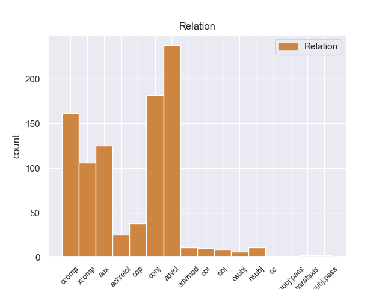
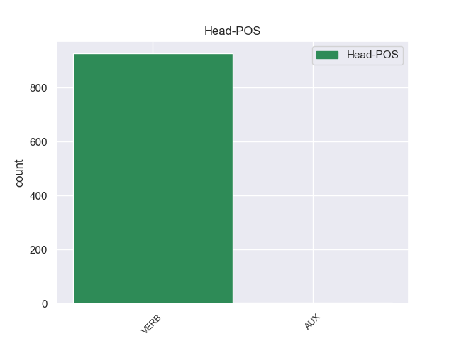
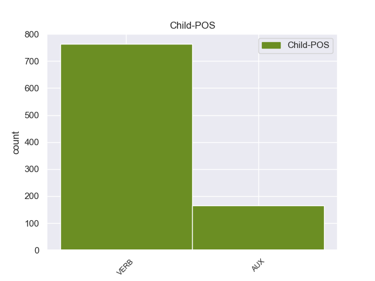

Distribution of features within this leaf



Agreement Rules sorted by frequency.
- When the dependent token is the adverbial clause modifier(advcl) of the head token,
1 « _ _ _ _ 0 _ _ _
2 Δεκαεννέα _ _ _ _ 0 _ _ _
3 κρατούμενοι _ _ _ _ 0 _ _ _
4 , _ _ _ _ 0 _ _ _
5 μέλη _ _ _ _ 0 _ _ _
6 της _ _ _ _ 0 _ _ _
7 Αλ _ _ _ _ 0 _ _ _
8 Κάιντα _ _ _ _ 0 _ _ _
9 και _ _ _ _ 0 _ _ _
10 της _ _ _ _ 0 _ _ _
11 Ανσάρ _ _ _ _ 0 _ _ _
12 αλ-Σούνα _ _ _ _ 0 _ _ _
13 , _ _ _ _ 0 _ _ _
14 απέδρασαν αποδιδρώ VERB VERB Aspect=Perf|Mood=Ind|Number=Plur|Person=3|Tense=Past|VerbForm=Fin|Voice=Act 0 _ _ _
15 σ _ _ _ _ 0 _ _ _
16 τις _ _ _ _ 0 _ _ _
17 03:30 _ _ _ _ 0 _ _ _
18 από _ _ _ _ 0 _ _ _
19 τη _ _ _ _ 0 _ _ _
20 φυλακή _ _ _ _ 0 _ _ _
21 , _ _ _ _ 0 _ _ _
22 αφού _ _ _ _ 0 _ _ _
23 αποκοίμισαν αποκοιμίζω VERB VERB Aspect=Perf|Mood=Ind|Number=Plur|Person=3|Tense=Past|VerbForm=Fin|Voice=Act 14 advcl _ _
24 τους _ _ _ _ 0 _ _ _
25 δεσμοφύλακες _ _ _ _ 0 _ _ _
26 και _ _ _ _ 0 _ _ _
27 τους _ _ _ _ 0 _ _ _
28 υπόλοιπους _ _ _ _ 0 _ _ _
29 κρατούμενους _ _ _ _ 0 _ _ _
30 . _ _ _ _ 0 _ _ _
1 Η _ _ _ _ 0 _ _ _
2 δράση _ _ _ _ 0 _ _ _
3 3 _ _ _ _ 0 _ _ _
4 περιλαμβάνει _ _ _ _ 0 _ _ _
5 τις _ _ _ _ 0 _ _ _
6 πρωτοβουλίες _ _ _ _ 0 _ _ _
7 σ _ _ _ _ 0 _ _ _
8 τον _ _ _ _ 0 _ _ _
9 τομέα _ _ _ _ 0 _ _ _
10 της _ _ _ _ 0 _ _ _
11 νεολαίας _ _ _ _ 0 _ _ _
12 , _ _ _ _ 0 _ _ _
13 η _ _ _ _ 0 _ _ _
14 δράση _ _ _ _ 0 _ _ _
15 4 _ _ _ _ 0 _ _ _
16 την _ _ _ _ 0 _ _ _
17 υποστήριξη _ _ _ _ 0 _ _ _
18 πρωτοβουλιών _ _ _ _ 0 _ _ _
19 που _ _ _ _ 0 _ _ _
20 ξεπερνούν ξεπερνώ VERB VERB Aspect=Imp|Mood=Ind|Number=Plur|Person=3|Tense=Pres|VerbForm=Fin|Voice=Act 0 _ _ _
21 το _ _ _ _ 0 _ _ _
22 πλαίσιο _ _ _ _ 0 _ _ _
23 των _ _ _ _ 0 _ _ _
24 μεμονωμένων _ _ _ _ 0 _ _ _
25 προγραμμάτων _ _ _ _ 0 _ _ _
26 και _ _ _ _ 0 _ _ _
27 διεξάγονται διεξάγω VERB VERB Aspect=Imp|Mood=Ind|Number=Plur|Person=3|Tense=Pres|VerbForm=Fin|Voice=Pass 20 conj _ _
28 από _ _ _ _ 0 _ _ _
29 κοινού _ _ _ _ 0 _ _ _
30 με _ _ _ _ 0 _ _ _
31 τα _ _ _ _ 0 _ _ _
32 προγράμματα _ _ _ _ 0 _ _ _
33 LEONARDO _ _ _ _ 0 _ _ _
34 και _ _ _ _ 0 _ _ _
35 ΣΩΚΡΑΤΗΣ _ _ _ _ 0 _ _ _
36 . _ _ _ _ 0 _ _ _
1 Σ _ _ _ _ 0 _ _ _
2 το _ _ _ _ 0 _ _ _
3 μεταξύ _ _ _ _ 0 _ _ _
4 , _ _ _ _ 0 _ _ _
5 τα _ _ _ _ 0 _ _ _
6 κρατικά _ _ _ _ 0 _ _ _
7 μέσα _ _ _ _ 0 _ _ _
8 ενημέρωσης _ _ _ _ 0 _ _ _
9 της _ _ _ _ 0 _ _ _
10 Συρίας _ _ _ _ 0 _ _ _
11 μετέδωσαν μεταδίδω VERB VERB Aspect=Perf|Mood=Ind|Number=Plur|Person=3|Tense=Past|VerbForm=Fin|Voice=Act 0 _ _ _
12 την _ _ _ _ 0 _ _ _
13 Κυριακή _ _ _ _ 0 _ _ _
14 ότι _ _ _ _ 0 _ _ _
15 " _ _ _ _ 0 _ _ _
16 το _ _ _ _ 0 _ _ _
17 Ανώτατο _ _ _ _ 0 _ _ _
18 Δικαστικό _ _ _ _ 0 _ _ _
19 Συμβούλιο _ _ _ _ 0 _ _ _
20 της _ _ _ _ 0 _ _ _
21 Συρίας _ _ _ _ 0 _ _ _
22 ακύρωσε ακυρώνω VERB VERB Aspect=Perf|Mood=Ind|Number=Sing|Person=3|Tense=Past|VerbForm=Fin|Voice=Act 11 ccomp _ _
23 νομικές _ _ _ _ 0 _ _ _
24 διαδικασίες _ _ _ _ 0 _ _ _
25 σε _ _ _ _ 0 _ _ _
26 βάρος _ _ _ _ 0 _ _ _
27 προσωπικοτήτων _ _ _ _ 0 _ _ _
28 της _ _ _ _ 0 _ _ _
29 Αντιπολίτευσης _ _ _ _ 0 _ _ _
30 που _ _ _ _ 0 _ _ _
31 βρίσκονται _ _ _ _ 0 _ _ _
32 σ _ _ _ _ 0 _ _ _
33 το _ _ _ _ 0 _ _ _
34 εξωτερικό _ _ _ _ 0 _ _ _
35 , _ _ _ _ 0 _ _ _
36 έτσι _ _ _ _ 0 _ _ _
37 ώστε _ _ _ _ 0 _ _ _
38 να _ _ _ _ 0 _ _ _
39 μπορέσουν _ _ _ _ 0 _ _ _
40 να _ _ _ _ 0 _ _ _
41 επιστρέψουν _ _ _ _ 0 _ _ _
42 σ _ _ _ _ 0 _ _ _
43 τη _ _ _ _ 0 _ _ _
44 Συρία _ _ _ _ 0 _ _ _
45 για _ _ _ _ 0 _ _ _
46 να _ _ _ _ 0 _ _ _
47 συμμετάσχουν _ _ _ _ 0 _ _ _
48 σε _ _ _ _ 0 _ _ _
49 εθνικό _ _ _ _ 0 _ _ _
50 διάλογο _ _ _ _ 0 _ _ _
51 που _ _ _ _ 0 _ _ _
52 πρότεινε _ _ _ _ 0 _ _ _
53 ο _ _ _ _ 0 _ _ _
54 Μπασάρ _ _ _ _ 0 _ _ _
55 αλ _ _ _ _ 0 _ _ _
56 Άσαντ _ _ _ _ 0 _ _ _
57 σ _ _ _ _ 0 _ _ _
58 τις _ _ _ _ 0 _ _ _
59 αρχές _ _ _ _ 0 _ _ _
60 του _ _ _ _ 0 _ _ _
61 μήνα _ _ _ _ 0 _ _ _
62 " _ _ _ _ 0 _ _ _
63 . _ _ _ _ 0 _ _ _
1 Όλοι _ _ _ _ 0 _ _ _
2 οι _ _ _ _ 0 _ _ _
3 βουλευτές _ _ _ _ 0 _ _ _
4 πρέπει πρέπει AUX AUX Aspect=Imp|Mood=Ind|Number=Sing|Person=3|Tense=Pres|VerbForm=Fin|Voice=Act 6 aux _ _
5 να _ _ _ _ 0 _ _ _
6 έχουν έχω VERB VERB Aspect=Imp|Mood=Ind|Number=Plur|Person=3|Tense=Pres|VerbForm=Fin|Voice=Act 0 _ _ _
7 δικαίωμα _ _ _ _ 0 _ _ _
8 να _ _ _ _ 0 _ _ _
9 μιλήσουν _ _ _ _ 0 _ _ _
10 τουλάχιστον _ _ _ _ 0 _ _ _
11 τρεις _ _ _ _ 0 _ _ _
12 φορές _ _ _ _ 0 _ _ _
13 τον _ _ _ _ 0 _ _ _
14 χρόνο _ _ _ _ 0 _ _ _
15 . _ _ _ _ 0 _ _ _
1 Εξάλλου _ _ _ _ 0 _ _ _
2 , _ _ _ _ 0 _ _ _
3 οι _ _ _ _ 0 _ _ _
4 κανόνες _ _ _ _ 0 _ _ _
5 αυτοί _ _ _ _ 0 _ _ _
6 οφείλουν οφείλω VERB VERB Aspect=Imp|Mood=Ind|Number=Plur|Person=3|Tense=Pres|VerbForm=Fin|Voice=Act 0 _ _ _
7 να _ _ _ _ 0 _ _ _
8 ευνοούν ευνοώ VERB VERB Aspect=Imp|Mood=Ind|Number=Plur|Person=3|Tense=Pres|VerbForm=Fin|Voice=Act 6 xcomp _ _
9 και _ _ _ _ 0 _ _ _
10 την _ _ _ _ 0 _ _ _
11 αειφόρο _ _ _ _ 0 _ _ _
12 ανάπτυξη _ _ _ _ 0 _ _ _
13 όπως _ _ _ _ 0 _ _ _
14 προβλέπει _ _ _ _ 0 _ _ _
15 η _ _ _ _ 0 _ _ _
16 Συνθήκη _ _ _ _ 0 _ _ _
17 του _ _ _ _ 0 _ _ _
18 Αμστερνταμ _ _ _ _ 0 _ _ _
19 , _ _ _ _ 0 _ _ _
20 για _ _ _ _ 0 _ _ _
21 να _ _ _ _ 0 _ _ _
22 σας _ _ _ _ 0 _ _ _
23 δώσω _ _ _ _ 0 _ _ _
24 ακόμα _ _ _ _ 0 _ _ _
25 ορισμένα _ _ _ _ 0 _ _ _
26 παραδείγματα _ _ _ _ 0 _ _ _
27 . _ _ _ _ 0 _ _ _
1 Αυτό _ _ _ _ 0 _ _ _
2 σημαίνει _ _ _ _ 0 _ _ _
3 ότι _ _ _ _ 0 _ _ _
4 , _ _ _ _ 0 _ _ _
5 όταν _ _ _ _ 0 _ _ _
6 μελετάμε _ _ _ _ 0 _ _ _
7 ενέργειες _ _ _ _ 0 _ _ _
8 που _ _ _ _ 0 _ _ _
9 είναι είμαι AUX AUX Aspect=Imp|Mood=Ind|Number=Plur|Person=3|Tense=Pres|VerbForm=Fin|Voice=Pass 10 cop _ _
10 πιθανόν πιθανός VERB VERB Aspect=Imp|Mood=Ind|Number=Plur|Person=3|Tense=Pres|VerbForm=Fin|Voice=Act 0 _ _ _
11 να _ _ _ _ 0 _ _ _
12 έχουν _ _ _ _ 0 _ _ _
13 σοβαρές _ _ _ _ 0 _ _ _
14 κοινωνικές _ _ _ _ 0 _ _ _
15 συνέπειες _ _ _ _ 0 _ _ _
16 , _ _ _ _ 0 _ _ _
17 για _ _ _ _ 0 _ _ _
18 παράδειγμα _ _ _ _ 0 _ _ _
19 απώλεια _ _ _ _ 0 _ _ _
20 θέσεων _ _ _ _ 0 _ _ _
21 εργασίας _ _ _ _ 0 _ _ _
22 , _ _ _ _ 0 _ _ _
23 οι _ _ _ _ 0 _ _ _
24 εταιρίες _ _ _ _ 0 _ _ _
25 θα _ _ _ _ 0 _ _ _
26 πρέπει _ _ _ _ 0 _ _ _
27 πάντα _ _ _ _ 0 _ _ _
28 να _ _ _ _ 0 _ _ _
29 αναζητούν _ _ _ _ 0 _ _ _
30 ενεργά _ _ _ _ 0 _ _ _
31 και _ _ _ _ 0 _ _ _
32 να _ _ _ _ 0 _ _ _
33 επιλέγουν _ _ _ _ 0 _ _ _
34 τη _ _ _ _ 0 _ _ _
35 λιγότερο _ _ _ _ 0 _ _ _
36 αρνητική _ _ _ _ 0 _ _ _
37 και _ _ _ _ 0 _ _ _
38 επιβλαβή _ _ _ _ 0 _ _ _
39 λύση _ _ _ _ 0 _ _ _
40 . _ _ _ _ 0 _ _ _
1 Θέλω θέλω VERB VERB Aspect=Imp|Mood=Ind|Number=Sing|Person=1|Tense=Pres|VerbForm=Fin|Voice=Act 0 _ _ _
2 μόνο _ _ _ _ 0 _ _ _
3 να _ _ _ _ 0 _ _ _
4 κάνω _ _ _ _ 0 _ _ _
5 τρεις _ _ _ _ 0 _ _ _
6 παρατηρήσεις _ _ _ _ 0 _ _ _
7 , _ _ _ _ 0 _ _ _
8 που _ _ _ _ 0 _ _ _
9 ίσως _ _ _ _ 0 _ _ _
10 να _ _ _ _ 0 _ _ _
11 τις _ _ _ _ 0 _ _ _
12 συμμερίζεται συμμερίζομαι VERB VERB Aspect=Imp|Mood=Ind|Number=Sing|Person=3|Tense=Pres|VerbForm=Fin|Voice=Pass 1 acl:relcl _ _
13 ο _ _ _ _ 0 _ _ _
14 Επίτροπος _ _ _ _ 0 _ _ _
15 Patten _ _ _ _ 0 _ _ _
16 , _ _ _ _ 0 _ _ _
17 αλλά _ _ _ _ 0 _ _ _
18 για _ _ _ _ 0 _ _ _
19 διάφορους _ _ _ _ 0 _ _ _
20 λόγους _ _ _ _ 0 _ _ _
21 δεν _ _ _ _ 0 _ _ _
22 μπορεί _ _ _ _ 0 _ _ _
23 να _ _ _ _ 0 _ _ _
24 τις _ _ _ _ 0 _ _ _
25 διατυπώσει _ _ _ _ 0 _ _ _
26 τόσο _ _ _ _ 0 _ _ _
27 ανοικτά _ _ _ _ 0 _ _ _
28 όσο _ _ _ _ 0 _ _ _
29 ένας _ _ _ _ 0 _ _ _
30 βουλευτής _ _ _ _ 0 _ _ _
31 . _ _ _ _ 0 _ _ _
1 Υπάρχει υπάρχω VERB VERB Aspect=Imp|Mood=Ind|Number=Sing|Person=3|Tense=Pres|VerbForm=Fin|Voice=Act 0 _ _ _
2 σ _ _ _ _ 0 _ _ _
3 τον _ _ _ _ 0 _ _ _
4 εν εν VERB VERB Aspect=Imp|Mood=Ind|Number=Plur|Person=3|Tense=Pres|VerbForm=Fin|Voice=Act 1 obl _ _
5 λόγω _ _ _ _ 0 _ _ _
6 τομέα _ _ _ _ 0 _ _ _
7 ένα _ _ _ _ 0 _ _ _
8 δυναμικό _ _ _ _ 0 _ _ _
9 το _ _ _ _ 0 _ _ _
10 οποίο _ _ _ _ 0 _ _ _
11 δεν _ _ _ _ 0 _ _ _
12 μπορεί _ _ _ _ 0 _ _ _
13 να _ _ _ _ 0 _ _ _
14 πραγματωθεί _ _ _ _ 0 _ _ _
15 απόλυτα _ _ _ _ 0 _ _ _
16 παρά _ _ _ _ 0 _ _ _
17 μόνο _ _ _ _ 0 _ _ _
18 σε _ _ _ _ 0 _ _ _
19 ευρωπαϊκό _ _ _ _ 0 _ _ _
20 επίπεδο _ _ _ _ 0 _ _ _
21 , _ _ _ _ 0 _ _ _
22 σε _ _ _ _ 0 _ _ _
23 συνεργασία _ _ _ _ 0 _ _ _
24 με _ _ _ _ 0 _ _ _
25 τα _ _ _ _ 0 _ _ _
26 πανεπιστήμια _ _ _ _ 0 _ _ _
27 , _ _ _ _ 0 _ _ _
28 τα _ _ _ _ 0 _ _ _
29 κέντρα _ _ _ _ 0 _ _ _
30 αριστείας _ _ _ _ 0 _ _ _
31 και _ _ _ _ 0 _ _ _
32 τις _ _ _ _ 0 _ _ _
33 δημόσιες _ _ _ _ 0 _ _ _
34 αρχές _ _ _ _ 0 _ _ _
35 . _ _ _ _ 0 _ _ _
1 Εκτιμώ _ _ _ _ 0 _ _ _
2 το _ _ _ _ 0 _ _ _
3 γεγονός _ _ _ _ 0 _ _ _
4 ότι _ _ _ _ 0 _ _ _
5 το _ _ _ _ 0 _ _ _
6 Κοινοβούλιο _ _ _ _ 0 _ _ _
7 είναι _ _ _ _ 0 _ _ _
8 σε _ _ _ _ 0 _ _ _
9 θέση _ _ _ _ 0 _ _ _
10 να _ _ _ _ 0 _ _ _
11 υποστηρίξει _ _ _ _ 0 _ _ _
12 την _ _ _ _ 0 _ _ _
13 προτεινόμενη _ _ _ _ 0 _ _ _
14 ολοκληρωμένη _ _ _ _ 0 _ _ _
15 και _ _ _ _ 0 _ _ _
16 διαπυλωνική _ _ _ _ 0 _ _ _
17 προσέγγιση _ _ _ _ 0 _ _ _
18 η _ _ _ _ 0 _ _ _
19 οποία _ _ _ _ 0 _ _ _
20 , _ _ _ _ 0 _ _ _
21 κι _ _ _ _ 0 _ _ _
22 εδώ _ _ _ _ 0 _ _ _
23 χρησιμοποιώ _ _ _ _ 0 _ _ _
24 αυτολεξεί αυτολεξώ VERB VERB Aspect=Imp|Mood=Ind|Number=Sing|Person=3|Tense=Pres|VerbForm=Fin|Voice=Act 29 nsubj _ _
25 τη _ _ _ _ 0 _ _ _
26 διατύπωση _ _ _ _ 0 _ _ _
27 της _ _ _ _ 0 _ _ _
28 έκθεσης _ _ _ _ 0 _ _ _
29 'μπορεί 'μπορώ VERB VERB Aspect=Imp|Mood=Ind|Number=Sing|Person=3|Tense=Pres|VerbForm=Fin|Voice=Act 0 _ _ _
30 να _ _ _ _ 0 _ _ _
31 αποφέρει _ _ _ _ 0 _ _ _
32 θετικά _ _ _ _ 0 _ _ _
33 αποτελέσματα' _ _ _ _ 0 _ _ _
34 . _ _ _ _ 0 _ _ _
1 Όσα _ _ _ _ 0 _ _ _
2 διακυβεύονται διακυβεύω VERB VERB Aspect=Imp|Mood=Ind|Number=Plur|Person=3|Tense=Pres|VerbForm=Fin|Voice=Pass 0 _ _ _
3 σε _ _ _ _ 0 _ _ _
4 αυτό _ _ _ _ 0 _ _ _
5 το _ _ _ _ 0 _ _ _
6 πλαίσιο _ _ _ _ 0 _ _ _
7 αγγίζουν αγγίζω VERB VERB Aspect=Imp|Mood=Ind|Number=Plur|Person=3|Tense=Pres|VerbForm=Fin|Voice=Act 2 advmod _ _
8 ολόκληρη _ _ _ _ 0 _ _ _
9 την _ _ _ _ 0 _ _ _
10 κοινωνία _ _ _ _ 0 _ _ _
11 μας _ _ _ _ 0 _ _ _
12 ! _ _ _ _ 0 _ _ _
1 Αληθεύει αληθεύω VERB VERB Aspect=Imp|Mood=Ind|Number=Sing|Person=3|Tense=Pres|VerbForm=Fin|Voice=Act 0 _ _ _
2 πράγματι _ _ _ _ 0 _ _ _
3 ότι _ _ _ _ 0 _ _ _
4 μέσα _ _ _ _ 0 _ _ _
5 σε _ _ _ _ 0 _ _ _
6 έναν _ _ _ _ 0 _ _ _
7 αναπτυσσόμενο _ _ _ _ 0 _ _ _
8 χώρο _ _ _ _ 0 _ _ _
9 ελευθερίας _ _ _ _ 0 _ _ _
10 , _ _ _ _ 0 _ _ _
11 ασφάλειας _ _ _ _ 0 _ _ _
12 και _ _ _ _ 0 _ _ _
13 δικαιοσύνης _ _ _ _ 0 _ _ _
14 , _ _ _ _ 0 _ _ _
15 τα _ _ _ _ 0 _ _ _
16 κράτη _ _ _ _ 0 _ _ _
17 μέλη _ _ _ _ 0 _ _ _
18 οφείλουν οφείλω VERB VERB Aspect=Imp|Mood=Ind|Number=Plur|Person=3|Tense=Pres|VerbForm=Fin|Voice=Act 1 csubj _ _
19 να _ _ _ _ 0 _ _ _
20 ξεκινήσουν _ _ _ _ 0 _ _ _
21 να _ _ _ _ 0 _ _ _
22 θέτουν _ _ _ _ 0 _ _ _
23 τα _ _ _ _ 0 _ _ _
24 θεμέλια _ _ _ _ 0 _ _ _
25 ώστε _ _ _ _ 0 _ _ _
26 να _ _ _ _ 0 _ _ _
27 εδραιωθεί _ _ _ _ 0 _ _ _
28 η _ _ _ _ 0 _ _ _
29 αμοιβαία _ _ _ _ 0 _ _ _
30 εμπιστοσύνη _ _ _ _ 0 _ _ _
31 σ _ _ _ _ 0 _ _ _
32 τα _ _ _ _ 0 _ _ _
33 νομικά _ _ _ _ 0 _ _ _
34 τους _ _ _ _ 0 _ _ _
35 συστήματα _ _ _ _ 0 _ _ _
36 . _ _ _ _ 0 _ _ _
1 Το _ _ _ _ 0 _ _ _
2 Συμβούλιο _ _ _ _ 0 _ _ _
3 - _ _ _ _ 0 _ _ _
4 όπως _ _ _ _ 0 _ _ _
5 είπε _ _ _ _ 0 _ _ _
6 σήμερα _ _ _ _ 0 _ _ _
7 το _ _ _ _ 0 _ _ _
8 πρωί _ _ _ _ 0 _ _ _
9 ο _ _ _ _ 0 _ _ _
10 κ. _ _ _ _ 0 _ _ _
11 Luνs _ _ _ _ 0 _ _ _
12 Amado _ _ _ _ 0 _ _ _
13 - _ _ _ _ 0 _ _ _
14 έχει έχω VERB VERB Aspect=Imp|Mood=Ind|Number=Sing|Person=3|Tense=Pres|VerbForm=Fin|Voice=Act 0 _ _ _
15 ήδη _ _ _ _ 0 _ _ _
16 εκφραστεί εκφραστώ VERB VERB Aspect=Imp|Mood=Ind|Number=Sing|Person=3|Tense=Pres|VerbForm=Fin|Voice=Act 14 obj _ _
17 σε _ _ _ _ 0 _ _ _
18 διαφορετικές _ _ _ _ 0 _ _ _
19 περιστάσεις _ _ _ _ 0 _ _ _
20 σχετικά _ _ _ _ 0 _ _ _
21 με _ _ _ _ 0 _ _ _
22 την _ _ _ _ 0 _ _ _
23 ανάγκη _ _ _ _ 0 _ _ _
24 για _ _ _ _ 0 _ _ _
25 συνοχή _ _ _ _ 0 _ _ _
26 - _ _ _ _ 0 _ _ _
27 η _ _ _ _ 0 _ _ _
28 τελευταία _ _ _ _ 0 _ _ _
29 φορά _ _ _ _ 0 _ _ _
30 , _ _ _ _ 0 _ _ _
31 βέβαια _ _ _ _ 0 _ _ _
32 , _ _ _ _ 0 _ _ _
33 ήταν _ _ _ _ 0 _ _ _
34 τον _ _ _ _ 0 _ _ _
35 Νοέμβριο _ _ _ _ 0 _ _ _
36 1999 _ _ _ _ 0 _ _ _
37 , _ _ _ _ 0 _ _ _
38 καθώς _ _ _ _ 0 _ _ _
39 και _ _ _ _ 0 _ _ _
40 άλλες _ _ _ _ 0 _ _ _
41 φορές _ _ _ _ 0 _ _ _
42 , _ _ _ _ 0 _ _ _
43 όπως _ _ _ _ 0 _ _ _
44 σ _ _ _ _ 0 _ _ _
45 τα _ _ _ _ 0 _ _ _
46 Συμβούλια _ _ _ _ 0 _ _ _
47 Ανάπτυξης _ _ _ _ 0 _ _ _
48 τον _ _ _ _ 0 _ _ _
49 Μάιο _ _ _ _ 0 _ _ _
50 1999 _ _ _ _ 0 _ _ _
51 και _ _ _ _ 0 _ _ _
52 τον _ _ _ _ 0 _ _ _
53 Ιούνιο _ _ _ _ 0 _ _ _
54 1997 _ _ _ _ 0 _ _ _
55 - _ _ _ _ 0 _ _ _
56 αλλά _ _ _ _ 0 _ _ _
57 χωρίς _ _ _ _ 0 _ _ _
58 συγκεκριμένα _ _ _ _ 0 _ _ _
59 αποτελέσματα _ _ _ _ 0 _ _ _
60 . _ _ _ _ 0 _ _ _
1 Συχνά _ _ _ _ 0 _ _ _
2 από _ _ _ _ 0 _ _ _
3 την _ _ _ _ 0 _ _ _
4 ανάγνωση _ _ _ _ 0 _ _ _
5 αυτών _ _ _ _ 0 _ _ _
6 των _ _ _ _ 0 _ _ _
7 εκθέσεων _ _ _ _ 0 _ _ _
8 αναφύεται αναφύω VERB VERB Aspect=Imp|Mood=Ind|Number=Sing|Person=3|Tense=Pres|VerbForm=Fin|Voice=Pass 0 _ _ _
9 περισσότερο _ _ _ _ 0 _ _ _
10 η _ _ _ _ 0 _ _ _
11 αμφιβολία _ _ _ _ 0 _ _ _
12 παρά παρά VERB VERB Aspect=Imp|Mood=Ind|Number=Sing|Person=3|Tense=Pres|VerbForm=Fin|Voice=Act 8 nsubj:pass _ _
13 η _ _ _ _ 0 _ _ _
14 βεβαιότητα _ _ _ _ 0 _ _ _
15 . _ _ _ _ 0 _ _ _
1 Εφόσον _ _ _ _ 0 _ _ _
2 , _ _ _ _ 0 _ _ _
3 κύριε _ _ _ _ 0 _ _ _
4 Επίτροπε _ _ _ _ 0 _ _ _
5 , _ _ _ _ 0 _ _ _
6 σ _ _ _ _ 0 _ _ _
7 τα _ _ _ _ 0 _ _ _
8 κράτη _ _ _ _ 0 _ _ _
9 μέλη _ _ _ _ 0 _ _ _
10 - _ _ _ _ 0 _ _ _
11 και _ _ _ _ 0 _ _ _
12 γνωρίζω γνωρίζω VERB VERB Aspect=Imp|Mood=Ind|Number=Sing|Person=1|Tense=Pres|VerbForm=Fin|Voice=Act 21 parataxis _ _
13 ότι _ _ _ _ 0 _ _ _
14 αυτό _ _ _ _ 0 _ _ _
15 δεν _ _ _ _ 0 _ _ _
16 αποτελεί _ _ _ _ 0 _ _ _
17 δική _ _ _ _ 0 _ _ _
18 σας _ _ _ _ 0 _ _ _
19 αρμοδιότητα _ _ _ _ 0 _ _ _
20 - _ _ _ _ 0 _ _ _
21 ισχύουν ισχύω VERB VERB Aspect=Imp|Mood=Ind|Number=Plur|Person=3|Tense=Pres|VerbForm=Fin|Voice=Act 0 _ _ _
22 διαφορετικές _ _ _ _ 0 _ _ _
23 προδιαγραφές _ _ _ _ 0 _ _ _
24 για _ _ _ _ 0 _ _ _
25 τον _ _ _ _ 0 _ _ _
26 αριθμό _ _ _ _ 0 _ _ _
27 χιλιομέτρων _ _ _ _ 0 _ _ _
28 ανά _ _ _ _ 0 _ _ _
29 ώρα _ _ _ _ 0 _ _ _
30 που _ _ _ _ 0 _ _ _
31 επιτρέπεται _ _ _ _ 0 _ _ _
32 να _ _ _ _ 0 _ _ _
33 οδηγεί _ _ _ _ 0 _ _ _
34 ένας _ _ _ _ 0 _ _ _
35 οδηγός _ _ _ _ 0 _ _ _
36 , _ _ _ _ 0 _ _ _
37 όλα _ _ _ _ 0 _ _ _
38 αυτά _ _ _ _ 0 _ _ _
39 δεν _ _ _ _ 0 _ _ _
40 θα _ _ _ _ 0 _ _ _
41 έχουν _ _ _ _ 0 _ _ _
42 κανένα _ _ _ _ 0 _ _ _
43 νόημα _ _ _ _ 0 _ _ _
44 . _ _ _ _ 0 _ _ _
1 Εφόσον _ _ _ _ 0 _ _ _
2 , _ _ _ _ 0 _ _ _
3 κύριε _ _ _ _ 0 _ _ _
4 Επίτροπε _ _ _ _ 0 _ _ _
5 , _ _ _ _ 0 _ _ _
6 σ _ _ _ _ 0 _ _ _
7 τα _ _ _ _ 0 _ _ _
8 κράτη _ _ _ _ 0 _ _ _
9 μέλη _ _ _ _ 0 _ _ _
10 - _ _ _ _ 0 _ _ _
11 και _ _ _ _ 0 _ _ _
12 γνωρίζω _ _ _ _ 0 _ _ _
13 ότι _ _ _ _ 0 _ _ _
14 αυτό _ _ _ _ 0 _ _ _
15 δεν _ _ _ _ 0 _ _ _
16 αποτελεί _ _ _ _ 0 _ _ _
17 δική _ _ _ _ 0 _ _ _
18 σας _ _ _ _ 0 _ _ _
19 αρμοδιότητα _ _ _ _ 0 _ _ _
20 - _ _ _ _ 0 _ _ _
21 ισχύουν _ _ _ _ 0 _ _ _
22 διαφορετικές _ _ _ _ 0 _ _ _
23 προδιαγραφές _ _ _ _ 0 _ _ _
24 για _ _ _ _ 0 _ _ _
25 τον _ _ _ _ 0 _ _ _
26 αριθμό _ _ _ _ 0 _ _ _
27 χιλιομέτρων _ _ _ _ 0 _ _ _
28 ανά _ _ _ _ 0 _ _ _
29 ώρα _ _ _ _ 0 _ _ _
30 που _ _ _ _ 0 _ _ _
31 επιτρέπεται επιτρέπω VERB VERB Aspect=Imp|Mood=Ind|Number=Sing|Person=3|Tense=Pres|VerbForm=Fin|Voice=Pass 0 _ _ _
32 να _ _ _ _ 0 _ _ _
33 οδηγεί οδηγώ VERB VERB Aspect=Imp|Mood=Ind|Number=Sing|Person=3|Tense=Pres|VerbForm=Fin|Voice=Act 31 csubj:pass _ _
34 ένας _ _ _ _ 0 _ _ _
35 οδηγός _ _ _ _ 0 _ _ _
36 , _ _ _ _ 0 _ _ _
37 όλα _ _ _ _ 0 _ _ _
38 αυτά _ _ _ _ 0 _ _ _
39 δεν _ _ _ _ 0 _ _ _
40 θα _ _ _ _ 0 _ _ _
41 έχουν _ _ _ _ 0 _ _ _
42 κανένα _ _ _ _ 0 _ _ _
43 νόημα _ _ _ _ 0 _ _ _
44 . _ _ _ _ 0 _ _ _
Disagree Examples:
1 Εν εν VERB VERB Aspect=Imp|Mood=Ind|Number=Plur|Person=3|Tense=Pres|VerbForm=Fin|Voice=Act 0 _ _ _
2 κατακλείδι _ _ _ _ 0 _ _ _
3 , _ _ _ _ 0 _ _ _
4 ως _ _ _ _ 0 _ _ _
5 Επιτροπή _ _ _ _ 0 _ _ _
6 Ενέργειας _ _ _ _ 0 _ _ _
7 θα _ _ _ _ 0 _ _ _
8 ευχόμασταν ευχόμασταν VERB VERB Aspect=Imp|Mood=Ind|Number=Plur|Person=3|Tense=Past|VerbForm=Fin|Voice=Act 1 ccomp _ _
9 να _ _ _ _ 0 _ _ _
10 είχε _ _ _ _ 0 _ _ _
11 δοθεί _ _ _ _ 0 _ _ _
12 ακόμη _ _ _ _ 0 _ _ _
13 μεγαλύτερη _ _ _ _ 0 _ _ _
14 έμφαση _ _ _ _ 0 _ _ _
15 σ _ _ _ _ 0 _ _ _
16 την _ _ _ _ 0 _ _ _
17 υποστήριξη _ _ _ _ 0 _ _ _
18 των _ _ _ _ 0 _ _ _
19 ανανεώσιμων _ _ _ _ 0 _ _ _
20 πηγών _ _ _ _ 0 _ _ _
21 ενέργειας _ _ _ _ 0 _ _ _
22 από _ _ _ _ 0 _ _ _
23 τους _ _ _ _ 0 _ _ _
24 πόρους _ _ _ _ 0 _ _ _
25 του _ _ _ _ 0 _ _ _
26 Ταμείου _ _ _ _ 0 _ _ _
27 Συνοχής _ _ _ _ 0 _ _ _
28 και _ _ _ _ 0 _ _ _
29 του _ _ _ _ 0 _ _ _
30 ΕΤΠΑ _ _ _ _ 0 _ _ _
31 , _ _ _ _ 0 _ _ _
32 και _ _ _ _ 0 _ _ _
33 μέσω _ _ _ _ 0 _ _ _
34 αυτών _ _ _ _ 0 _ _ _
35 να _ _ _ _ 0 _ _ _
36 είχε _ _ _ _ 0 _ _ _
37 καταστεί _ _ _ _ 0 _ _ _
38 δυνατή _ _ _ _ 0 _ _ _
39 με _ _ _ _ 0 _ _ _
40 τον _ _ _ _ 0 _ _ _
41 συντονισμό _ _ _ _ 0 _ _ _
42 η _ _ _ _ 0 _ _ _
43 μεγαλύτερη _ _ _ _ 0 _ _ _
44 χρήση _ _ _ _ 0 _ _ _
45 των _ _ _ _ 0 _ _ _
46 ανανεώσιμων _ _ _ _ 0 _ _ _
47 μορφών _ _ _ _ 0 _ _ _
48 ενέργειας _ _ _ _ 0 _ _ _
49 , _ _ _ _ 0 _ _ _
50 έτσι _ _ _ _ 0 _ _ _
51 ώστε _ _ _ _ 0 _ _ _
52 οι _ _ _ _ 0 _ _ _
53 ανεπαρκείς _ _ _ _ 0 _ _ _
54 χρηματοδοτικοί _ _ _ _ 0 _ _ _
55 πόροι _ _ _ _ 0 _ _ _
56 του _ _ _ _ 0 _ _ _
57 ενεργειακού _ _ _ _ 0 _ _ _
58 προγράμματος _ _ _ _ 0 _ _ _
59 να _ _ _ _ 0 _ _ _
60 εξισορροπούνταν _ _ _ _ 0 _ _ _
61 με _ _ _ _ 0 _ _ _
62 τα _ _ _ _ 0 _ _ _
63 συγκεκριμένα _ _ _ _ 0 _ _ _
64 άφθονα _ _ _ _ 0 _ _ _
65 κονδύλια _ _ _ _ 0 _ _ _
66 . _ _ _ _ 0 _ _ _
1 Αναδιπλωνόμαστε Αναδιπλωνόμαστε VERB VERB Aspect=Perf|Mood=Ind|Number=Plur|Person=2|Tense=Past|VerbForm=Fin|Voice=Pass 0 _ _ _
2 σε _ _ _ _ 0 _ _ _
3 ένα _ _ _ _ 0 _ _ _
4 είδος _ _ _ _ 0 _ _ _
5 υποκατάστατου _ _ _ _ 0 _ _ _
6 με _ _ _ _ 0 _ _ _
7 βάση _ _ _ _ 0 _ _ _
8 τα _ _ _ _ 0 _ _ _
9 ανθρωπιστικά _ _ _ _ 0 _ _ _
10 δικαιώματα _ _ _ _ 0 _ _ _
11 , _ _ _ _ 0 _ _ _
12 σε _ _ _ _ 0 _ _ _
13 ένα _ _ _ _ 0 _ _ _
14 είδος _ _ _ _ 0 _ _ _
15 στρατού _ _ _ _ 0 _ _ _
16 σ _ _ _ _ 0 _ _ _
17 την _ _ _ _ 0 _ _ _
18 υπηρεσία _ _ _ _ 0 _ _ _
19 ασαφών _ _ _ _ 0 _ _ _
20 ιδεών _ _ _ _ 0 _ _ _
21 , _ _ _ _ 0 _ _ _
22 ενός _ _ _ _ 0 _ _ _
23 ιδανικού _ _ _ _ 0 _ _ _
24 για _ _ _ _ 0 _ _ _
25 το _ _ _ _ 0 _ _ _
26 οποίο _ _ _ _ 0 _ _ _
27 άλλωστε _ _ _ _ 0 _ _ _
28 η _ _ _ _ 0 _ _ _
29 ιστορία _ _ _ _ 0 _ _ _
30 έχει έχω VERB VERB Aspect=Imp|Mood=Ind|Number=Sing|Person=3|Tense=Pres|VerbForm=Fin|Voice=Act 1 advcl _ _
31 δείξει _ _ _ _ 0 _ _ _
32 πολλές _ _ _ _ 0 _ _ _
33 φορές _ _ _ _ 0 _ _ _
34 τους _ _ _ _ 0 _ _ _
35 κινδύνους _ _ _ _ 0 _ _ _
36 . _ _ _ _ 0 _ _ _
1 Τι τι VERB VERB Aspect=Imp|Mood=Ind|Number=Sing|Person=3|Tense=Pres|VerbForm=Fin|Voice=Act 5 advcl _ _
2 άλλα _ _ _ _ 0 _ _ _
3 μηνύματα _ _ _ _ 0 _ _ _
4 περιμένει _ _ _ _ 0 _ _ _
5 άραγε άραγος VERB VERB Aspect=Perf|Mood=Ind|Number=Sing|Person=3|Tense=Past|VerbForm=Fin|Voice=Act 0 _ _ _
6 η _ _ _ _ 0 _ _ _
7 Ευρωπαϊκή _ _ _ _ 0 _ _ _
8 Επιτροπή _ _ _ _ 0 _ _ _
9 προκειμένου _ _ _ _ 0 _ _ _
10 να _ _ _ _ 0 _ _ _
11 διακόψει _ _ _ _ 0 _ _ _
12 τη _ _ _ _ 0 _ _ _
13 βοήθεια _ _ _ _ 0 _ _ _
14 προς _ _ _ _ 0 _ _ _
15 τη _ _ _ _ 0 _ _ _
16 χώρα _ _ _ _ 0 _ _ _
17 αυτή _ _ _ _ 0 _ _ _
18 ; _ _ _ _ 0 _ _ _
1 Τι _ _ _ _ 0 _ _ _
2 άλλα _ _ _ _ 0 _ _ _
3 μηνύματα _ _ _ _ 0 _ _ _
4 περιμένει περιμένω VERB VERB Aspect=Imp|Mood=Ind|Number=Sing|Person=3|Tense=Pres|VerbForm=Fin|Voice=Act 5 advcl _ _
5 άραγε άραγος VERB VERB Aspect=Perf|Mood=Ind|Number=Sing|Person=3|Tense=Past|VerbForm=Fin|Voice=Act 0 _ _ _
6 η _ _ _ _ 0 _ _ _
7 Ευρωπαϊκή _ _ _ _ 0 _ _ _
8 Επιτροπή _ _ _ _ 0 _ _ _
9 προκειμένου _ _ _ _ 0 _ _ _
10 να _ _ _ _ 0 _ _ _
11 διακόψει _ _ _ _ 0 _ _ _
12 τη _ _ _ _ 0 _ _ _
13 βοήθεια _ _ _ _ 0 _ _ _
14 προς _ _ _ _ 0 _ _ _
15 τη _ _ _ _ 0 _ _ _
16 χώρα _ _ _ _ 0 _ _ _
17 αυτή _ _ _ _ 0 _ _ _
18 ; _ _ _ _ 0 _ _ _
1 Όσον _ _ _ _ 0 _ _ _
2 αφορά αφορώ VERB VERB Aspect=Imp|Mood=Ind|Number=Sing|Person=3|Tense=Pres|VerbForm=Fin|Voice=Act 7 advcl _ _
3 την _ _ _ _ 0 _ _ _
4 έκθεση _ _ _ _ 0 _ _ _
5 Ferber _ _ _ _ 0 _ _ _
6 θα _ _ _ _ 0 _ _ _
7 θέλαμε θέλω VERB VERB Aspect=Imp|Mood=Ind|Number=Plur|Person=1|Tense=Past|VerbForm=Fin|Voice=Act 0 _ _ _
8 να _ _ _ _ 0 _ _ _
9 παρατηρήσουμε _ _ _ _ 0 _ _ _
10 ότι _ _ _ _ 0 _ _ _
11 προς _ _ _ _ 0 _ _ _
12 το _ _ _ _ 0 _ _ _
13 παρόν _ _ _ _ 0 _ _ _
14 δεν _ _ _ _ 0 _ _ _
15 επιθυμούμε _ _ _ _ 0 _ _ _
16 να _ _ _ _ 0 _ _ _
17 λάβουμε _ _ _ _ 0 _ _ _
18 θέση _ _ _ _ 0 _ _ _
19 σχετικά _ _ _ _ 0 _ _ _
20 με _ _ _ _ 0 _ _ _
21 λεπτομέρειες _ _ _ _ 0 _ _ _
22 , _ _ _ _ 0 _ _ _
23 όπως _ _ _ _ 0 _ _ _
24 τη _ _ _ _ 0 _ _ _
25 δημιουργία _ _ _ _ 0 _ _ _
26 νέων _ _ _ _ 0 _ _ _
27 υπηρεσιακών _ _ _ _ 0 _ _ _
28 θέσεων _ _ _ _ 0 _ _ _
29 . _ _ _ _ 0 _ _ _